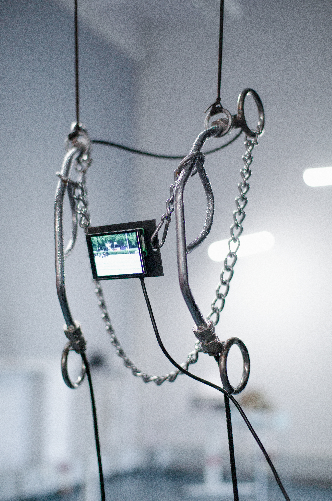
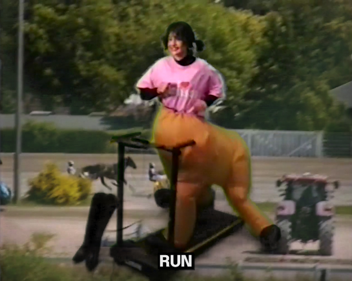
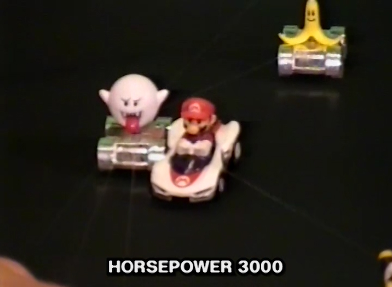
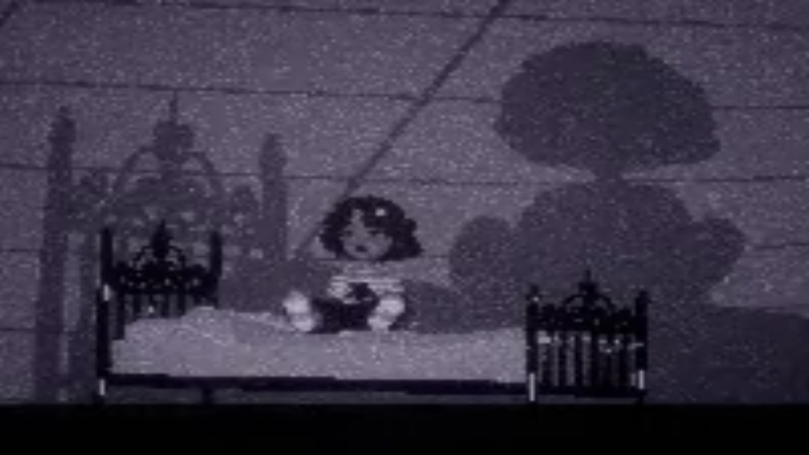
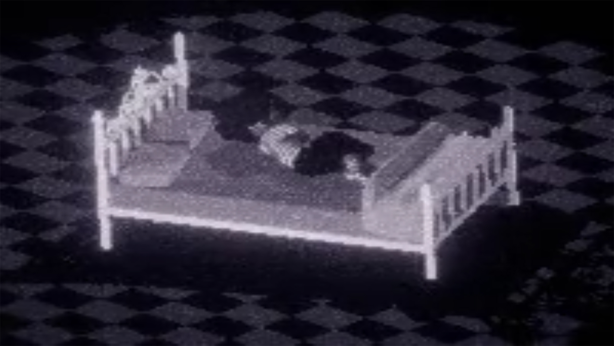
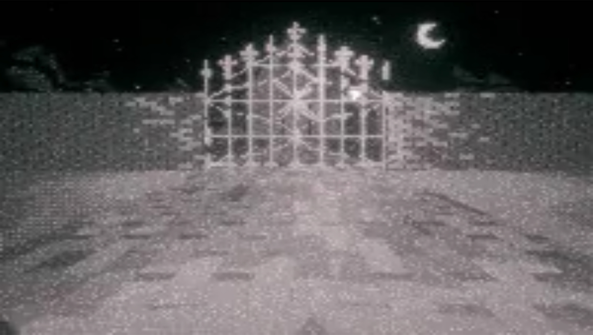
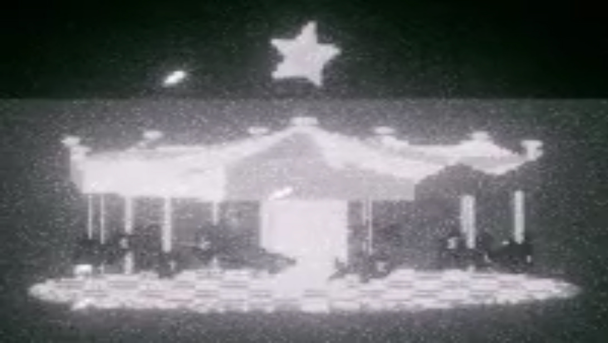
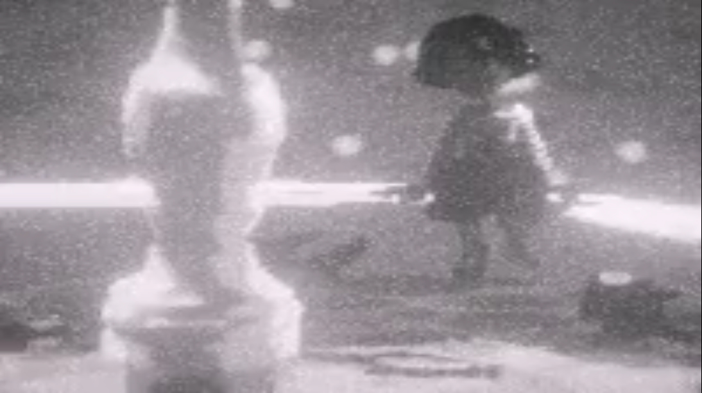
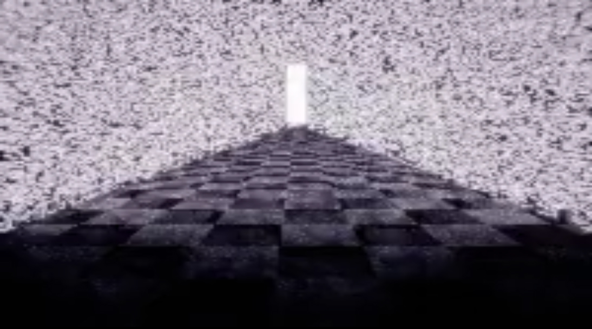

Hi !! :—)
I will never be as fast as a horse (2025)
:(
This work explores the feeling of never being enough, drawing inspiration from the image of horse racing,
particularly the man versus horse race, as well as horse bits.
An embedded cooling system causes visible droplets of 'sweat' to appear on the sculpture's surface,
matching those seen in the video.
I haven't fully documented this work yet, but here is a video of the
class documentation
from this year's Rundgang.
If you follow this
link,
you will find my upload on the Rundgang announcement page.




Compressed quality due to limited upload capacity. Sorry!
@1x_1-1.jpg)


Backyard Daydream (Flawless issues) (2025)
This developed out of a music video assignment. A love song turned into Insomnia. The song's nostalgic lyrics and tone, combined with its sounds and lo-fi production, create a sense of the past haunting the present.
Memory is portrayed as a ghostly presence that shapes perception and triggers a longing for what was and what could have been. Insomnia explores this in-between state.
The protagonist is unable to move forward and face the new day, paradoxically falling asleep as the sun rises. As night deepens, this state becomes increasingly distorted, like restless memories looping endlessly in the mind.
Watch it on YouTube :-)






what if we followed each other's pheromones in the ant death spiral?? (2024)
The 'ant mill' has been observed in army ants that have lost their pheromone trail, resulting in a spiral formation in which the ants mistakenly follow each other, eventually leading to death by exhaustion.
Pursued by an invisible and unconscious force, it is almost as if they desire their own destruction.
The video documentation can be seen here.
[materials: washing machine drum, pheromone perfume, aroma diffuser made of resin, print on foam, electronics; welding support by Maxim Tur]


annual shedding (2024–)
On the day of your birthday:
- Crochet an encasing around yourself
- Shed
- Repeat yearly
Duration:
from 05.02.2024, 18.56 pm
to 06.02.2024, 18.58 pm.
A video documentation of the 24-hour birthday performance is available here. However, please note that the SD card broke during filming, which is the reason for the limited footage.